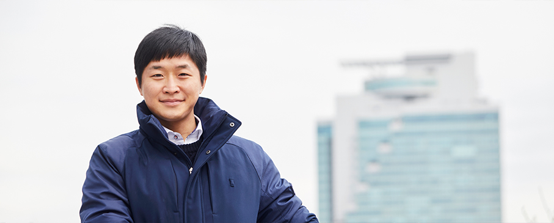
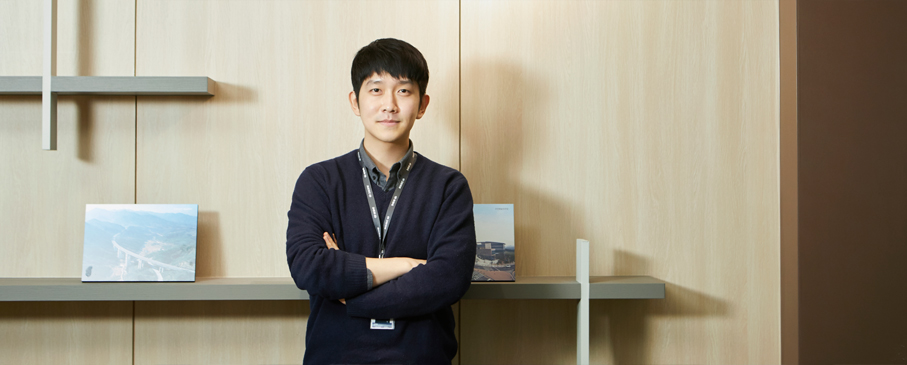

저는 주택사업팀에서 공사 수주를 위한 사업의 타당성 검토, 수주 여부 결정을 위한 내부 심의 및 계약체결에 이르기까지의 과정을 담당하는 수주 업무를 맡고 있습니다.
주택사업팀
표유정 과장
112
저는 주택사업팀에서 공사 수주를 위한 사업의 타당성 검토, 수주 여부 결정을 위한 내부 심의 및 계약체결에 이르기까지의 과정을 담당하는 수주 업무를 맡고 있습니다. 개발대상 토지에 대한 건축 관련 법규 검토, 시장조사 등을 통해 개발 콘셉트를 설정하고 사업성 검토를 거쳐 사업성이 있다고 판단될 경우, 관련 부서들과 협의해 사업계획을 구체화해 나갑니다. 또한, 사업 추진과정에서 발생할 수 있는 위험 요인들을 미리 검토하고 최소화하는 방안을 도출하며, 내부적으로 검토된 진행 상황을 관계자들에게 설명하고 협의하는 것도 저의 주요 업무입니다.
하루를 주로 어떻게 보내시나요?
출근하면 제일 먼저 이메일부터 확인하고, 검토 중인 프로젝트의 현황을 파악하는 것으로 하루를 시작합니다. 일일 업무 추진현황을 점검해 검토 중인 사안, 본격적으로 진행할 사안, 계류 중인 사안들을 분류하여 가중치를 두어야 할 업무를 선정하고, 세부사항을 검토합니다. 본격적으로 진행할 프로젝트는 설계, 분양, 공사비 등 각 전문 분야의 의견이 필요한 사항이 많기 때문에 관련 부서의 담당자들과 미팅을 통해 향후 진행 방향에 대해 논의하고, 그 결과를 반영하는 것이 하루의 주요 일과입니다.
맡은 업무를 수행하기 위해 어떤 자질과 역량이 필요한가요?
부동산 분석 능력이 가장 기본적인 자질이라고 생각합니다. 일의 특성상 다양한 사업 관계자 및 전문가들과 의견을 나누고 협상을 해야 하므로, 열린 자세로 커뮤니케이션하는 능력도 필요합니다. 또한, 각각의 사업 구도 및 참여자가 다르므로 상황 및 조건에 따라 다양하고 창의적인 사업 구도를 고안할 수 있는 논리성과 창의성도 수반돼야 합니다. 그리고 고객 및 심사 담당자를 효과적으로 설득하기 위해서는 논리적으로 설명하고 설득할 수 있는 역량도 중요합니다.
기억에 남는 업무나 프로젝트 성공사례가 있나요?
부동산 경기 침체와 악화에도 불구하고 최근 수주에 성공한 프로젝트가 가장 기억에 남습니다. 제 업무는 수주를 위한 사업 추진 과정에서 위험 요인을 최소화하는 개발방안을 도출해야 하므로 추진이 쉽지 않고, 진행 시간도 길게 소요됩니다. 수많은 관련 부서들과 협의 후 사업 계획이 완성되고, 시공 참여가 결정되어야 마침내 도급 계약을 하게 되는데, 이 순간이 그간의 힘들었던 여정을 보상해주는 가장 만족스러운 순간입니다. 최근 수주한 프로젝트는 이러한 환경 속에서 수주에 성공한 사업이라 더욱 기억에 남을 것 같습니다. 어려움에도 불구하고 여러 부서와의 협업으로 수주에 성공하게 되어, 다시 한번 공동체의 힘을 느끼게 된 좋은 경험이었습니다.
고려개발에 입사하기 위해 어떤 노력을 하셨나요?
입사 준비를 위해 제가 생각하는 가장 중요한 점은 자신이 겪어 온 과정을 하나의 이야기로 만들고, 희망하는 직무에 대해 알아보는 것입니다. 취업 전선에 나오기까지 겪어온 많은 경험을 자신만의 이야기로 만들어 장점을 보여주는 것이 중요하다고 생각합니다. 또한, 원하는 직무에 대한 파악이 필요합니다. 해당 직무에 필요한 역량과 자질을 파악하는 일은 자신의 미래와도 직결되는 매우 중요한 판단 요소입니다. 저 역시 이런 사항들을 점검했고, 제가 하고 싶은 직무와 그 일을 하는 데 필요한 필수 자질을 고민해보면서 준비했습니다. 꾸며낸 이야기가 아닌 진정한 나 자신을 보여주고, 지원하는 직무에 대해 숙지하면 면접 시 어떤 질문에도 자신 있게 대응할 수 있고, 이는 합격의 비결이 될 것으로 생각합니다.
고려개발을 한마디로 표현한다면?
고려개발은 나의 ‘비전’이다. 개인적인 성장을 위해 노력함과 동시에 제가 가진 역량을 발휘해 고려개발과 함께 커 나가고 싶습니다. 그런 의미에서 고려개발은 저에게 비전이라고 할 수 있습니다.
저는 사업 수주를 위한 상품 전략수립부터 분양을 위한 견본주택 건립 업무 등 사업 전반에 걸쳐 설계 업무를 수행합니다.
건축설계팀
박남수 과장
212
건축설계팀에서 건축설계의 상품개발 업무를 담당하고 있습니다. 저희 팀은 크게 건축설계와 건축구조 2개의 파트로 운영되는데, 저는 사업 수주를 위한 상품 전략수립부터 분양을 위한 견본주택 건립 업무 등 사업 전반에 걸쳐 설계 업무를 수행합니다. 또한, 주기적인 현장 점검을 통해 적정 품질을 확보할 수 있도록 현장 설계지원 업무도 함께 하고 있습니다.
하루를 주로 어떻게 보내시나요?
직무 특성상 시기에 따라 하루 일과가 달라집니다. 분양이 없는 시기에는 추진 사업지별 상품전략 및 설계관리 업무에 대부분 시간을 할애하며, 틈틈이 상품 트렌드를 조사하고 분석하는 업무를 진행합니다. 분양 시기에는 인테리어 설계 및 견본주택 건립을 위한 협력사 미팅과 출장이 많아집니다. 그리고 보통 퇴근 전 15분 정도는 하루 업무를 점검하는 마무리 시간을 가집니다.
맡은 업무를 수행하기 위해 어떤 자질과 역량이 필요한가요?
건설회사에서 설계 업무는 가장 기본적이면서도 가장 전문성을 요구하는 자리인 것 같습니다. 도면에 표시된 선 하나로 인해 현장의 많은 관계자가 어려움에 직면할 수 있고, 반대로 많은 사람의 기억에 남는 멋진 건축물을 계획할 수도 있습니다. 이에 한 치의 오차 없이 정확하게 업무를 수행할 수 있는 세심함이 요구되며, 타 공종에 대한 폭넓은 지식과 배우려는 적극적인 자세가 필요합니다. 또한, 회사 직원 및 외부 협력사들과 원활하게 업무를 추진할 수 있는 소통능력을 갖춘다면 업무를 수행함에 있어 큰 도움이 될 것으로 생각합니다.
기억에 남는 업무나 프로젝트 성공사례가 있나요?
'e편한세상 오포 4차' 분양을 위한 주택 전시관이 오픈 후 일주일 만에 화재로 인해 전소되었던 사례가 가장 기억에 남습니다. 불행 중 다행으로 인명피해는 없었지만, 이로 인해 계획된 일정에 차질이 생겼고 이를 최소화하기 위해 밤낮으로 뛰었던 일이 가장 기억에 남습니다. 특히 입사 후 첫 담당 프로젝트였기에 저에겐 무척 힘든 시련이었지만, 다행히 주변의 많은 도움으로 분양을 잘 마무리할 수 있었고, 많이 배울 수 있었던 값진 경험이었습니다.
고려개발에 입사하기 위해 어떤 노력을 하셨나요?
저는 경력 입사자로 기본적으로 회사에서 요구하는 설계 분야의 실무 경험뿐만 아니라 새로운 기술을 배우기 위해 쏟았던 몇 년간의 준비과정을 장점으로 부각했습니다. 면접 시 BIM 설계라는 특수 분야의 업무 경험을 바탕으로 현장 적용사례 위주로 인터뷰를 진행한 것이 좋은 결과로 이어진 것 같습니다. 분명한 목표의식과 자신감을 가진다면 언제 어디서든 원하는 회사에 꼭 입사할 수 있을 것입니다.
고려개발을 한마디로 표현한다면?
고려개발은 '흙 속의 진주'다. 고려개발이 과거의 어려움을 타산지석으로 삼아 현재의 위기를 슬기롭게 극복한다면 미래에는 진주같이 값진 건설회사로 거듭날 수 있다는 의미입니다.
마케팅팀은 변화하는 부동산 시장의 동향을 파악하고 분석해 마케팅 전략을 세우고 실행하는 부서입니다.
마케팅팀
주상훈 차장
312
마케팅팀은 변화하는 부동산 시장의 동향을 파악하고 분석해 마케팅 전략을 세우고 실행하는 부서입니다. 저는 사업지별로 특성화된 마케팅 전략 수립과 실행, 정확한 분양성 조사를 통한 수주 지원, 분양관리, 자산관리 등의 업무를 수행하고 있습니다. 정기적으로는 신규 프로젝트 분양성 조사 및 상품기획, 브랜드 홈페이지 관리, 분양관련 홍보물 제작 등을 수행합니다. 또한 견본주택 부지 선정 및 운영, 분양대행사 협업, 분양계약자의 계약/수금/입주관리 업무도 하고 있습니다.
하루를 주로 어떻게 보내시나요?
매일 8시 30분 이전에 출근합니다. 오전 업무 시작과 함께 현장별 분양관리 업무를 진행합니다. 지역별 부동산 시장 동향을 분석하고, 브랜드 홈페이지로 접수된 다양한 고객 문의에 성실히 답변하는 일 역시 저의 중요한 일과입니다. 이 밖에 수주지원 업무, 부동산 시장 특성에 맞는 마케팅 전략과 수립, 광고홍보, 분양전략 등의 실행 업무를 진행하고, 공사 진행 및 입주 현장에서는 분양계약/수금관리 업무를 합니다.
맡은 업무를 수행하기 위해 어떤 자질과 역량이 필요한가요?
마케팅 업무는 성공적인 분양을 위해 다양한 업종의 종사자와 협의를 통해 함께 업무를 수행합니다. 시시각각 변화하는 부동산 시장을 정확하게 보는 분석 능력과 수많은 사람과 유기적으로 협력하고 조화롭게 일을 진행하는 인성과 마케팅 업무 수행 시 많은 관계를 효과적으로 연결하는 코디네이션 능력도 필요합니다.
기억에 남는 업무나 프로젝트 성공사례가 있나요?
2015년 경남 밀양시에 e편한세상 브랜드를 최초로 공급했던 프로젝트가 기억에 남습니다. 겨우 인구 10만의 작은 농업 도시 밀양에 브랜드 아파트가 들어선다는 것에 주변 반대도 있었지만, 결국 모두의 노력으로 밀양시의 대표 주거단지로 자리매김할 수 있었습니다. '밀양이 내려다보이는 e편한세상, 삼문동의 자부심을 대표하다'라는 메인 카피처럼 밀양시의 대표 단지 건설에 마케팅 담당자로서 함께 참여할 수 있었던 것에 큰 자부심을 가지고 있습니다.
고려개발에 입사하기 위해 어떤 노력을 하셨나요?
경력직으로 입사했기에 마케팅 관련 업무 능력과 다양한 건축사업(아파트, 오피스텔, 주상복합, 복합상가 등)을 수행한 경험과 실적을 토대로 업무수행 능력을 부각하는 데 주력했습니다. 또한, 고객의 요구와 트렌드를 이해하고 분석한 상품개발 능력과 부동산과 금융, 사회 전반의 동향 등을 정확하게 분석하는 마케팅 전문가로서 역량을 키우고자 노력했습니다.
고려개발을 한마디로 표현한다면?
고려개발은 '프로다운 최고'다. 고려개발은 1965년 창업 이래, 국내 최초로 해외건설업 토목/건축 면허 취득, 국내 최초로 오피스텔 도입한 역사 깊고 시장을 선도해 온 건설 회사입니다. 또한, 직원 간 서로 존중하며 끈끈하게 소통하는 독특한 문화를 가지며, 이런 고려개발의 직원들을 ‘고려인’이라고 부릅니다. 급변하는 부동산 시장에서 최고의 가치 창출을 위해 열심히 일하는 고려인이야말로 프로다운 최고라고 할 수 있습니다.
안전보건팀은 안전, 보건, 환경에 대한 현장지원 업무를 수행하며 현장의 안전사고를 예방하기 위해 잠재 위험 요소를 파악하고, 이를 기반으로 안전하게 작업할 수 있도록 대책을 수립하는 업무를 수행합니다. 그중에서 저는 안전점검계획을 수립하고 안전관리 가이드를 작성하여 배포하는 등 현장 안전 지원업무를 담당하고 있습니다.
하루를 주로 어떻게 보내시나요?
아침에 출근하면 해야 할 업무의 기한일을 확인하고 순차적으로 업무를 수행합니다. 업무 중 시시각각 현장에서 다양한 요청사항이 전달되는데, 항상 메모하는 습관을 들여 업무를 할 때 잊거나 빼먹지 않고 일을 처리할 수 있도록 노력합니다. 또한, 온종일 앉아서 업무를 수행하기 때문에 되도록 점심시간에는 밖으로 나가 근처 공원을 걸으며 체력관리를 하고 있습니다.
맡은 업무를 수행하기 위해 어떤 자질과 역량이 필요한가요?
안전 업무를 수행하기 위해서는 우선 안전과 관련된 법을 잘 숙지하고 있어야 하며, 건축과 토목 분야의 지식도 필요합니다. 또한, 업무에 대한 내용을 다른 사람에게 발표하는 일이 많으므로 정보를 잘 다듬고 정리하고, 전달력 있게 발표하는 능력을 갖추고 있다면 큰 도움이 됩니다. 물론 처음부터 모든 것에 완벽한 사람은 없습니다. 입사 후 노력하는 마음으로 배우는 자세를 가진다면 선배들이 필요한 노하우를 전수해줄 것입니다.
기억에 남는 업무나 프로젝트 성공사례가 있나요?
입사 후 처음 작성했던 안전 가이드가 현장에 잘 적용되었을 때가 가장 기억에 남습니다. 현장에 안전점검을 나가 안전 가이드에 따라 안전수칙이 수립된 것을 보면서 현장 안전관리에 '나도 한몫을 해냈구나!' 하는 마음에 정말 큰 보람을 느꼈습니다.
고려개발에 입사하기 위해 어떤 노력을 하셨나요?
안전직 직무 수행을 위해서는 기사 자격증은 필수입니다. 따라서 학창시절에는 주로 다양한 기사 자격증 취득을 목표로 공부했고, 고려개발 입사 준비 과정에서는 나의 능력이 회사에 어떤 도움이 될 수 있는지를 중점적으로 어필했습니다. 면접 당시 잘 모르는 부분에 대한 질의에도 당황하지 않고 최선을 다해 관련 지식을 바탕으로 대답하고자 노력했습니다. 면접 준비 시 '나만의 강점'을 다른 지원자들과 차별화시켜 효과적으로 잘 표현할 수 있다면 좋은 결과가 있을 것입니다.
고려개발을 한마디로 표현한다면?
고려개발은 '기회의 장'이다. 고려개발은 선후배 사이의 관계가 돈독하며, 서로 밀고 당겨주며 생활합니다. 부족한 부분이 있다면 질책보다는 격려를, 잘하는 부분이 있다면 큰 칭찬을 해주는 생활문화가 정착되어 있어 신입사원이 업무에 쉽게 적응하고 일을 배워 나가기 좋은 회사입니다. 특히 맡은 업무에 대해서 전문가로 성장할 수 있도록 다양한 기회를 제공해주는 등 수많은 기회를 부여해줍니다.
평촌 디지털 엠파이어 신축공사 현장에서 공무업무를 맡고 있습니다. 건설회사에서 현장업무는 크게 공사업무와 공무업무로 나누어집니다. 공사를 현장에서 직접 지휘하며 현장을 이끌어 나가는 공사업무를 원활히 진행하기 위해서 모든 분야를 지원하는 것이 저의 업무입니다.
하루를 주로 어떻게 보내시나요?
아침 7시, 현장으로 출근해 아침 체조로 하루를 시작합니다. 직원들과 간단히 아침을 먹고, 일과를 계획합니다. 오전 업무가 끝나면 점심 후 사무실에서 잠깐 쉬거나 사무실 지하 헬스장에서 간단하게 운동을 하기도 합니다. 대부분의 직원이 현장 주변에서 숙소 생활을 하고 있어 업무가 끝나면 다 같이 저녁을 먹고 7~8시쯤 퇴근합니다. 저는 집에서 현장으로 출퇴근을 하고 있는데, 출퇴근 시간을 활용해 짬짬이 필요한 공부를 하거나 즐겨보는 예능 프로를 시청하기도 합니다.
맡은 업무를 수행하기 위해 어떤 자질과 역량이 필요한가요?
제가 처음 공무업무를 시작하면서 가장 많이 들었던 말은 바로 '숫자를 놓치면 안 된다'라는 것이었어요. 수량부터 금액까지 많은 숫자를 관리해야 하며, 그 숫자 하나하나가 각각 중요한 의미가 있다는 뜻이었습니다. 만일 관리자인 제가 그 숫자를 놓친다면 숫자가 가진 중요한 내용 역시 놓치게 되는 거죠. 때문에 아주 작은 것까지도 놓치지 않는 세심함은 공무업무에 매우 중요한 자질이라고 생각합니다.
기억에 남는 업무나 프로젝트 성공사례가 있나요?
처음 현장에 투입되면 아무것도 없고 잘 모르는 상황에서 그저 주어진 업무만 처리하기에 급급하게 됩니다. 계속 반복되는 일들을 처리하다 보면 항상 제자리걸음만 하는 것 같기도 해요. 하지만 땅을 파고 기초가 생기고 건물이 올라가는 긴 과정을 지나 완성된 결과물을 마주하면 지나간 세월이 주마등처럼 스치며 새롭게 기억됩니다. 마라톤 경기처럼 결승점을 통과할 때까지는 멈추거나 쉴 수 없지만, 그 끝에 도착해서 보면 '지나온 길이 힘들고 어려웠어도 보람 있고 뿌듯한 일을 해냈구나'하는 생각이 드는 것과 같죠. 그래서 저는 제가 참여했던 모든 현장이 기억에 남는 것 같습니다.
고려개발에 입사하기 위해 어떤 노력을 하셨나요?
입사를 준비할 때 자신이 지원할 회사에 대해 많은 정보를 수집하고, 그 회사의 비전을 살펴본 후 지원하는 것이 중요하다고 생각합니다. 사실, 회사에 대한 생각은 입사 전과 후가 다르기도 하고, 또 직무에 대한 개인차가 있을 수도 있습니다. 하지만, 중요한 것은 입사 전에는 자신이 하고자 하는 일이 자신에게 맞는 일인지를 신중하게 생각해야 하고, 입사 후에는 나에게 닥칠 수많은 어려움 등을 이겨내고 한 발 더 앞으로 나아갈 수 있는 신념과 목표가 중요하다고 생각합니다.
고려개발을 한마디로 표현한다면?
고려개발은 '가치를 증명하는 곳'이다. 개개인의 가치가 모여 모두의 가치가 되고, 기업의 가치를 이루는 것이 고려개발의 목표라고 생각합니다. 그래서 저는 ‘가치를 증명하는 곳’이라고 생각합니다.
토목사업팀은 토목분야 기술형입찰(TK/대안/기술제안) 수주와 토목사업본부 영업을 총괄하고 있으며, 그중 저는 수주기획 업무를 담당하고 있습니다
토목사업팀
신충훈 과장
612
토목사업팀은 토목분야 기술형입찰?(TK/대안/기술제안) 수주와 토목사업본부 영업을 총괄하고 있으며, 그중 저는 수주기획 업무를 담당하고 있습니다. 수주기획 업무는 기술형입찰 사업을 발굴 및 기획/제안하고, 추진 전략을 수립하여 양질의 사업을 수주하는 직무입니다.
하루를 주로 어떻게 보내시나요?
회사 업무에서 중요한 것 중 하나가 바로 스케줄 관리인 것 같습니다. 회사에 출근하면 먼저 오늘 할 일을 점검합니다. 시급하거나 중요한 일, 빨리 할 수 있는 일 위주로 업무의 우선순위를 정하고 일과를 시작합니다. 점심시간에는 주로 입사 동기 또는 팀원들과 커피를 마시며 재충전을 하고, 퇴근 전에는 내일 해야 할 일을 정리하고 하루를 마무리합니다.
맡은 업무를 수행하기 위해 어떤 자질과 역량이 필요한가요?
사업 정보를 수집하기 위해서는 적극성이 필요하며, 사업 추진 시 객관적으로 사업성을 분석할 수 있는 역량이 필요합니다. 특히 기술형입찰의 특성상 사업 실패 시 실패 비용이 발생하여 회사에 손실을 끼치게 됩니다. 따라서 추진 사업에 대한 냉철한 분석 능력이 중요합니다.
기억에 남는 업무나 프로젝트 성공사례가 있나요?
2016년과 2017년에 수행했던 도로공사 사업 2건이 기억에 남습니다. 발 빠른 정보 수집을 통해서 최적의 공구를 선점하여 사업을 수주할 수 있었습니다. 무엇보다 제가 적극적으로 의견을 제시해서 수주에 기여했다는 점에서 뿌듯했고 기억에 남습니다.
고려개발에 입사하기 위해 어떤 노력을 하셨나요?
토목기사 자격증 및 어학 점수 등 기본적인 스펙도 필요하지만 무엇보다 면접 준비를 충실히 했습니다. 면접에 임할 때는 당황하거나 떨지 않고 당당하게 자신의 의견을 피력하는 것이 중요한 것 같습니다.
고려개발을 한마디로 표현한다면?
고려개발은 나의 ‘비전’이다. 개인적인 성장을 위해 노력함과 동시에 제가 가진 역량을 발휘해 고려개발과 함께 커 나가고 싶습니다. 그런 의미에서 고려개발은 저에게 비전이라고 할 수 있습니다.
저는 토목사업본부 내 토목기술팀에서 공공 공사 입찰업무를 담당하고 있습니다. 토목기술팀은 크게 입찰과 실행 2개의 분야로 나뉘는데, 입찰 담당자는 조달청 등에서 발주하는 공공 공사를 수주하기 위해 수익성 검토 및 명세서 작성과 같은 업무를 하고, 실행 담당자는 수주한 공사들에 대해서 실제로 시공할 경우 예상되는 원가를 산정하는 업무를 담당합니다.
하루를 주로 어떻게 보내시나요?
출근하면 가장 먼저 팀원들과 반갑게 인사를 하면서 하루를 시작합니다. 그리고 자리에 앉아 컴퓨터를 켜는 순간 전투적인 일과가 시작됩니다. 우선 신규로 공고된 사업들을 검색하고, 기존에 공고된 사업에 대해서는 변경사항이 있는지 점검합니다. 입찰은 다양한 법령과 기준들이 있기에 변경사항 등을 놓치지 않고 꼼꼼하게 점검해야만 실수를 없앨 수 있습니다. 그 이후에는 참여하는 사업에 대해서 수익성 검토를 주로 합니다. 업무를 하다가 여유 시간이 생기면 자료 정리나 부서 물품 관리 등 팀의 막내의 역할도 톡톡히 해내고 있습니다.
맡은 업무를 수행하기 위해 어떤 자질과 역량이 필요한가요?
입찰 업무는 입찰제도를 숙지하는 것이 가장 중요합니다. 심사 방법을 정확히 숙지해야만 무효, 감점 사유 등을 사전에 검토할 수 있기 때문입니다. 또한, 입찰 전 수익성 검토는 설계 도서를 통해 공사 여건을 정확히 파악해야 절감 사항, 위험요인 등을 사전에 예측할 수 있기 때문에 설계 도서를 검토할 수 있는 역량이 필요합니다.
기억에 남는 업무나 프로젝트 성공사례가 있나요?
신입사원으로 입사 후 6개월쯤, 한 주에 입찰이 10건 이상 몰렸던 때가 가장 기억에 남습니다. 계속되는 야근과 밤샘 근무로 팀 모두가 많이 지쳐있는 상태였고, 저 역시 일을 막 배우기 시작한 상황이라 정신이 없었습니다. 하지만 팀원들 모두 각자의 일을 실수 없이 해내고자 끊임없이 검토하고 부단히 노력한 끝에 입찰을 무사히 마칠 수 있었습니다. 비록 수주에 성공하지는 못했지만 모든 입찰을 잘 끝낼 수 있었고, 맡은 일에 끝까지 열정을 가지고 책임을 다하는 선배들을 보면서 고려개발의 미래를 이끌어가는 원동력이라고 생각했습니다.
고려개발에 입사하기 위해 어떤 노력을 하셨나요?
저는 학생 시절, 다양한 경험을 해보고자 노력했습니다. 저소득층 멘토, 일본 유학생 멘토, 교환학생 등 다양한 분야의 여러 경험을 했었는데, 그중 설계사 인턴 활동을 하면서 저의 직무 성향을 알게 되었습니다. 인턴 활동을 통해 토목 직무를 좀 더 이해하게 되었고, 진지한 고민 끝에 설계보다는 시공 관련 일을 하고 싶다는 결론을 얻고 고려개발에 지원, 입사하게 되었습니다. 학점관리, 어학점수, 자격증 취득과 같은 각종 스펙 쌓기도 물론 중요하지만, 여러 활동을 해보면서 나에게 맞는 일은 어떤 것인지 나의 직무 성향은 무엇인지 등 직업에 대해 좀 더 진지하게 고민해보고 입사를 결정하는 것이 필요하고, 매우 중요하다고 생각합니다.
고려개발을 한마디로 표현한다면?
고려개발은 '내일이 기대되는 회사'다. 고려개발은 한때 힘든 시기도 있었지만, 건설회사로 50년 이상의 역사를 가진 회사입니다. 변화에 대응하고 혁신하고자 계속 노력하기 때문에 고려개발은 앞으로 더욱 빛을 발할 것으로 기대합니다.
제 주요 업무는 현장에서 발생하는 설계변경을 총괄해 관리하고 있으며 특히, 기술적인 부분(재설계, 공법변경 등)을 지원하며 현장의 설계변경이 원활하게 이루어지도록 하는 업무를 수행하고 있습니다.
토목설계팀
이동욱 과장
812
토목설계팀에서 설계관리를 담당하고 있습니다. 토목설계팀은 크게 설계변경과 설계관리를 담당하는 부서로, 제 주요 업무는 현장에서 발생하는 설계변경을 총괄해 관리하고 있으며 특히, 기술적인 부분(재설계, 공법변경 등)을 지원하며 현장의 설계변경이 원활하게 이루어지도록 하는 업무를 수행하고 있습니다.
하루를 주로 어떻게 보내시나요?
아침 7시 30분쯤 출근해서 전날 수행했던 일들을 다시 검토해보고, 오늘 해야 할 일을 정리하는 것으로 하루를 시작합니다. 일과 중 틈틈이 내역서와 설계변경 사례를 찾아보면서 설계 분야의 최신 트렌드를 익히고 있으며, 퇴근 후에는 가족과 함께 많은 시간을 보냅니다. 일과 가정 한쪽에만 치우치지 않고, 둘 모두를 잘 해내려고 노력하고 있습니다.
맡은 업무를 수행하기 위해 어떤 자질과 역량이 필요한가요?
설계변경 업무를 수행하기 위해서는 현장, 발주처, 감리 등 외부 사람들과 회의를 많이 하게 됩니다. 설계변경 안을 회사 측에 유리하게 관철하기 위해서는 논리적인 설득과 의사소통 능력이 무엇보다 중요합니다. 또한, 담당업무의 전문 기술과 지식은 기본으로 갖춰야 하며, 특히 여러 분야의 설계 경험이 뒷받침되면 더욱 좋을 것 같습니다.
기억에 남는 업무나 프로젝트 성공사례가 있나요?
설계변경 업무는 짧은 시간 동안 여러 건의 일을 동시에 수행하는 경우가 많습니다. 그래서 어느 한 프로젝트를 성공적으로 수행하기보다는 동시다발로 생기는 여러 가지의 업무들을 일의 경중을 따져 잘 조율하는 것이 매우 중요합니다. 아침에 출근해 전날 했던 일과 오늘 할 일들을 정리하는 습관 때문에 설계변경 업무를 문제없이 잘 수행할 수 있었습니다.
고려개발에 입사하기 위해 어떤 노력을 하셨나요?
저는 경력직으로 고려개발에 입사했습니다. 면접을 준비하면서 이전 회사에서의 설계 경력을 집중적으로 부각한 포트폴리오를 준비했고, 도로, 철도, 수구조물 등 다양한 구조물 설계를 수행했던 업무를 중심으로 제 업무 능력을 입증하기 위해 노력했습니다. 또한, 면접 당시 자신감 있고 당당한 태도와 기존 직원들과의 조화를 강조했던 점도 도움이 됐던 것 같습니다.
고려개발을 한마디로 표현한다면?
고려개발은 '다윗'이다. '작지만 강한 조직', 이 말이 고려개발을 가장 잘 표현하는 말이라고 생각합니다. 기술형입찰에서 국내 굴지의 건설사들을 물리치고 입찰에 성공할 만큼 고려개발은 건설업계의 작은 거인이라고 생각합니다. 앞으로 국내 건설업계의 최고의 가치를 갖는 기업이 될 것으로 생각합니다.
저는 진접선 제3공구 현장 공사팀의 담당 기사로서 직무를 수행하고 있습니다. 진접선 현장의 주요 공종으로는 교량, 터널, 정거장 등이 있으며, 공사팀은 공사의 준공기한에 맞춰 공정을 수립함과 동시에 최적의 품질을 확보하며, 안전관리도 철저하게 해야 합니다. 저는 이러한 목표 달성을 위해 합리적인 공정을 작성하고 협력 업체와 원활히 소통하며 열심히 일하고 있습니다.
하루를 주로 어떻게 보내시나요?
공사팀은 아침부터 저녁까지 현장에서 근로자들과 함께 호흡하며 업무를 수행합니다. 저 역시 아침 기상과 동시에 현장으로 나가 근로자들과 함께 체조하고 안전조회를 합니다. 더불어 그날 있을 공정에 대한 작업사항을 정리하고, 근로자들에게 위험 작업에 대한 안전교육을 진행합니다. 현장에서는 주로 작업사항 관리, 확인, 검측 등의 업무를 진행하고, 현장 업무가 끝나면 사무실로 돌아와 다음날 있을 공정에 대한 도면 검토, 서류작성 및 회의 등을 하고 하루를 마감합니다.
맡은 업무를 수행하기 위해 어떤 자질과 역량이 필요한가요?
현장 업무를 위해서는 전공에 대한 해박한 지식과 근로자들과 원만하게 소통하는 커뮤니케이션 능력은 필수입니다. 또한, 직무에 대한 경험이 풍부할수록 좋겠지요. 특히 현장에서 많은 근로자와 협력하고 소통해야 하는 업무 특성상 리더십과 관리 능력도 매우 중요합니다. 개인적으로는 군대에서 장교로서 많은 인원을 관리하고 이끌었던 경험이 현재 업무 수행에 큰 밑거름이 되었습니다. 전공 지식을 쌓고, 다양한 사람들과 협력하고 소통하면서 추진력을 발휘할 수 있는 능력을 키운다면 가장 좋을 것 같습니다.
기억에 남는 업무나 프로젝트 성공사례가 있나요?
현장의 교각 시공 공정을 달성하기 위한 시간이 매우 촉박했던 적이 있습니다. 계획했던 공법으로는 공기 달성이 불가능해 보였습니다. 하지만 꼭 제 시간에 맞춰야만 했기에 주민영 공사 팀장님과 박경국 공사 과장님께 조언을 구한 뒤 현장 작업반장님을 찾아가 새로운 공사 방법을 함께 모색했습니다. 서로 머리를 맞대고 의논한 끝에 새로운 공법을 찾았고, 도면과 설명서에 맞는 기준 안에서 새로운 공법을 적용해 목표했던 공정을 달성할 수 있었습니다. 빠른 문제점 파악과 현장과의 협업 및 원활한 소통 능력, 뚝심 있는 저의 소신으로 어려움을 극복한 프로젝트였고 지금까지도 가장 기억에 남습니다. 현장과의 소통 능력, 업무에 대한 소신, 해박한 전공 지식은 현장에서 꼭 필요한 3요소라고 확신합니다.
고려개발에 입사하기 위해 어떤 노력을 하셨나요?
입사 전, 토목기사 자격증을 준비하여 취득했습니다. 하지만 제가 실제 현장에서 일하면서 느낀 점은 단순히 자격증 취득을 위한 공부보다는 업무에 대한 폭넓은 이해와 깊이를 위해 공부를 해야 한다는 것입니다. 시험을 위한 공부는 시간이 지나면 까먹기 쉽지만, 구조역학, 토질역학, 수리·수문학 등을 깊이 있게 공부하면 실제 현장에서 하게 되는 구조검토나 도면해석 등의 업무가 훨씬 쉽고 이해의 폭도 넓어집니다. 첫째, 전공에 대한 깊이 있는 공부, 둘째, 안전, 품질 등 공사와 직간접적으로 연관되는 지식에 대한 학습과 경험, 셋째, 다양한 사람들과 원활하게 의사 소통할 수 있는 능력을 갖춘다면 당신은 이미 고려인입니다.

고려개발을 한마디로 표현한다면?
고려개발은 나와 '부부관계'다. 흔히 부부는 서로 같은 곳을 바라보며, 같은 목표를 향해 함께 나아가는 사이라고 합니다. 저는 고려개발과 부부처럼 같은 목표를 향해 나아가며 함께 발전하며 성장하고 싶습니다. 나의 가족 고려개발, 그리고 우리 진접선 3공구 식구들, 언제나 파이팅! 입니다.
CEO 직속 본부 경영기획팀에서 일하고 있습니다. 경영기획팀은 기업의 비전 및 경영 목표를 달성하기 위한 경영 전반의 현안을 모니터링하고 회사가 나아갈 방향을 제시하는 역할을 합니다. 저는 기획팀에서 전략기획과 홍보 업무를 담당하고 있습니다. 전략기획의 업무로서는 사업계획수립 및 성과관리 등의 업무를 지원하고 있고, 홍보로서는 사내행사 공유, 홈페이지 관리, 언론취재 대응 등의 일을 수행하고 있습니다.
하루를 주로 어떻게 보내시나요?
출근 후 가장 먼저 하는 일은 밤새 들어온 다양한 언론 업체의 정보 데이터를 분야별로 정리해 사내 임직원들에게 전달하고 공유하는 일입니다. 그리고 회의 주관부서로서 정기적으로 전 사업팀의 자료를 취합, 검토하여 경영진들의 원활한 의사 결정이 이루어질 수 있도록 회의 자료를 준비합니다. 회의 후 결정된 사항은 전사적으로 공유하고, 새로운 지시사항들에 대해서는 추가 개선책을 준비해 다시 계획합니다. 그 외 경영기획팀의 업무는 전사 현안을 다루기 때문에 매일 다르게 진행되는 편입니다. 업무 중 여유가 생길 때는 회사 전반에 대한 임직원들의 의견을 알기 위해 타 부서의 직원들과 티 타임을 가지면서 의견을 공유하는 편입니다.
맡은 업무를 수행하기 위해 어떤 자질과 역량이 필요한가요?
기획 업무는 회사의 현재 경영상황을 분석해 미래 전략 방향을 수립하는 업무로 이에 분석력과 통찰력이 가장 필요하다고 생각합니다. 건설산업 분야의 다양한 지식과 회사 전반에 대한 폭넓은 지식, 업계 트렌드에 뒤처지지 않는 신속한 정보력 등을 갖춰야 합니다. 평소 많은 독서와 글쓰기 연습이 필요하며, 임직원 모두를 논리적으로 잘 설득하고 이해시킬 수 있는 커뮤니케이션 능력이 중요합니다. 또한, 회사 내에서는 모든 내용을 문서로 작성하고 전달하므로 오피스 활용 능력은 필수적입니다.
기억에 남는 업무나 프로젝트 성공사례가 있나요?
회사 홈페이지 리뉴얼 프로젝트가 가장 기억에 남습니다. 입사 후 처음 맡게 된 큰 프로젝트이기도 했지만 회사 홈페이지를 거의 10년 만에 새롭게 단장해야 하는데, 홈페이지 제작 관련 업무에 대한 지식이 많지 않아 적지 않은 부담과 두려움이 있었습니다. 하지만 회사의 얼굴인 기업 홈페이지의 리뉴얼 프로젝트인 만큼 더욱 열과 성의를 다해 준비를 진행했고, 해당 업무 팀원들과 외주 제작업체와의 적극적인 협업으로 계획대로 프로젝트를 마칠 수 있었습니다. 이 프로젝트를 통해 일은 혼자가 아닌 함께 할 때 시너지가 더 크다는 것이라는 것을 배울 수 있었고, 이후 어떠한 업무 지시를 받더라도 항상 배움의 자세로 도전적으로 임하고 있습니다.
고려개발에 입사하기 위해 어떤 노력을 하셨나요?
저는 경력직으로 고려개발에 입사했습니다. 이직의 기회가 왔을 때 고려개발의 경영현황과 미래비전에 대해 철저히 분석해 보고, 제 미래를 고려개발에 투자해도 좋겠다고 판단했습니다. 인터뷰 시 과거 전략기획 업무를 수행한 경험과 실적을 토대로 자신감 있는 업무수행 능력을 부각하는데 주력했습니다. 또한, 평소 다양한 독서를 통해 다져진 지식을 기반으로 빠르게 정보를 찾고 습득하는 능력을 강조한 것이 큰 도움이 됐습니다.
고려개발을 한마디로 표현한다면?
고려개발은 '사다리'이다. 자신의 키보다 더 높은 곳에 올라가려면 사다리가 필요합니다. 고려개발을 통해 더 넓은 세상과 더 높은 꿈, 그리고 더 많은 기회를 얻게 되었기에 고려개발은 저의 한계를 뛰어넘을 수 있는 ‘사다리’라고 생각합니다.
저는 인사총무팀에서 근무하고 있습니다. 인사총무팀은 직원들의 직무 만족도와 조직의 역량을 극대화하는 업무를 담당하는 부서입니다.
인사총무팀
정주훈 사원
1112
저는 인사총무팀에서 근무하고 있습니다. 인사총무팀은 직원들의 직무 만족도와 조직의 역량을 극대화하는 업무를 담당하는 부서입니다. 인사총무팀의 주된 업무는 직원들의 채용, 평가, 승진, 교육, 보험 및 사옥 관리 등인데, 그중에서 저는 급여와 복리후생을 담당하고 있습니다.
하루를 주로 어떻게 보내시나요?
아침에 출근하면 주로 전날 오후까지 접수된 다양한 복지 제도 신청을 검토하고 처리합니다. 고려개발에서는 임직원 본인을 포함한 가족들의 의료비와 유치원부터 대학교까지 자녀 학자금을 지원하고 있으며, 또한 시중보다 낮은 금리로 대출을 받을 수 있는 사내 근로복지기금 제도를 운용하고 있습니다. 따라서 저는 임직원들의 복리후생 신청을 접수하고, 신청 내용을 공정하고 신속하게 처리하는 데 집중하고 있습니다.
맡은 업무를 수행하기 위해 어떤 자질과 역량이 필요한가요?
인사와 노무 관련 법에 대한 지식이 필요합니다. 물론 신입사원의 경우, 업무를 익히면서 부서 선배들에게 하나씩 차근차근 배우게 되지만, 기본적으로 HR 관련 이슈에 지속적인 관심을 가져야 합니다. 법과 제도는 언제든지 바뀔 수 있으니까요. 또한, 남을 설득하고 이해시킬 수 있는 논리력과 커뮤니케이션 능력이 있어야 하고, 그것을 자료나 보고서로 작성할 수 있는 오피스 활용 능력도 필요합니다.
기억에 남는 업무나 프로젝트 성공사례가 있나요?
아직 연차가 낮은 사원이다 보니 대단한 프로젝트를 도맡은 적은 없지만, 매달 지급되는 급여 명세를 입력하고 확인하는 업무가 무엇보다 큰 프로젝트라고 생각하면서 수행하고 있습니다. 한 달 동안 열심히 일한 임직원분들이 한 달간 일한 결과에 대해 보람을 느낄 수 있도록, 작은 숫자 하나하나 세심하게 들여다보며 실수가 생기지 않도록 노력하고 있습니다. 나중에 다른 직무를 맡게 되더라도 지금의 업무가 큰 보람으로 기억될 것 같습니다.
고려개발에 입사하기 위해 어떤 노력을 하셨나요?
‘인사총무팀’에서 담당하는 업무 분석 및 필요한 지식에 대한 준비와 함께 고려개발의 사업 분야인 건설에 대해서도 기초적인 지식부터 챙기며 준비했습니다. 토의, 역량 면접 등에서 인사총무 관련 지식과 더불어 건설회사에서 요구되는 자질과 지식 등을 함께 녹여서 발표했었는데 좋은 결과로 이어진 것 같습니다. 인사총무팀에 지원하고 싶다면 “왜 인사총무팀에 지원하는가?”에 대한 답을 준비하는 만큼, “왜 고려개발에 입사하고 싶은가?”라는 질문도 스스로에게 해보고 충실하게 준비하면 좋은 결과가 있을 것으로 생각합니다.

고려개발을 한마디로 표현한다면?
고려개발은 '온수매트'다. 얼마 전 뉴스에서 국내 건설사 중 고려개발의 근속연수가 가장 길다는 보도가 있었습니다. 근속연수가 길다는 것은 '직원들이 계속 일하고 싶은 회사'라는 뜻이라고 생각합니다. 추운 겨울, 따끈한 온수매트 위에 누우면 선뜻 밖으로 나오기 힘들 듯 고려개발에 입사해보니 따뜻하고 포근한 회사 분위기가 좋아서 오래 다니고 싶은 회사라고 느꼈습니다.
저는 외주조달팀에서 토목외주(하도급) 입찰 및 계약을 담당하고 있습니다. 현장의 협력업체 선정부터 계약체결, 협력업체 부도부실 관리, 프로젝트 준공 전 정산 계약에 이르기까지 공사 진행 일련의 과정을 현장과 함께하고 있습니다.
하루를 주로 어떻게 보내시나요?
저희 팀의 첫 번째 고객은 현장입니다. 출근하자마자 가장 먼저 현장별 협력업체 선정 및 계약의뢰요청 전자결재 문서를 확인합니다. 현장의 원활한 공정 진행을 위해서는 발주와 계약 체결이 제때 이루어져야 하므로 매일 아침 현장별 진행 상황을 파악해 현장에 지원해야 할 사항을 고민하고 현장과 소통합니다. 퇴근 후에는 조깅을 하거나 풋살 동호회 활동을 하며 체력관리를 열심히 하고 있습니다.
맡은 업무를 수행하기 위해 어떤 자질과 역량이 필요한가요?
첫째, 하도급 발주 내역에 대한 기술적인 지식이 있어야 합니다. 현장경험을 토대로 발주 공종의 특성을 정확히 알아야 하며, 입찰참여 업체들의 투찰 성향을 예측해 원가를 절감할 수 있는 발주 방식을 분석할 수 있어야 합니다. 둘째, 하도급 거래 공정화에 관한 법률 및 건설산업기본법 등 하도급과 관련된 법률을 정확히 인지해 법률위반 행위가 발생하지 않도록 노력해야 합니다.
기억에 남는 업무나 프로젝트 성공사례가 있나요?
시흥시 하수관로정비 민자사업(BTL) 프로젝트가 가장 기억에 남습니다. 실 공사 기간이 촉박하여 공사 시작과 동시에 주요 공종도 함께 착수해야 했기 때문에 사업실시계획 승인 전 현장 발주내역 검토 및 업체 선정을 모두 완료해야 했습니다. 짧은 시간이었지만 사전에 꼼꼼하게 준비해서 모든 공정에 차질이 없도록 발주를 마칠 수 있었습니다
고려개발에 입사하기 위해 어떤 노력을 하셨나요?
전공 관련 자격증 취득과 언어 점수 획득에도 신경을 썼지만, 지속적인 모의 면접 스터디를 통하여 면접에 대한 준비도 꼼꼼히 했습니다. 평소 나의 장점을 업무와 연관해 부각하고, 긴장하지 않고 자신감 있게 말하는 연습을 했습니다. 또한, 각종 매체 등을 통하여 건설업의 흐름과 최근 이슈 사항 등도 놓치지 않고 살피면서 면접 역량을 키웠습니다.
고려개발을 한마디로 표현한다면?
고려개발은 ‘말뚝’이다. 어려운 건설 환경 속에서도 온갖 악재라는 무거운 짐들을 끊임없이 지탱해내고 ‘고려인’의 의지가 가라앉지 않도록 든든하게 받쳐주는 역할을 해주었기 때문입니다. 저는 이 튼튼한 말뚝을 기초로 무한성장하는 고려개발을 꿈꾸고 있습니다.


 수주견적
수주견적